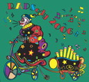

|
Home Membership Renewals |
Upcoming Rides Calendar
If you wish to lead and list a ride or have questions or comments, please contact: rides @ seattlebicycle.org Ramrod/Rapsody Training Series Ride Days: Most Saturdays from March to August unless otherwise posted.
 North end Tuesday Night
Ride North end Tuesday Night
RideNew Starting Place August 1 Ride start: 23000 Lakeview Dr, Ballinger Golf Club Parking lot Meet at: 6:15pm, start 6:30pm. Ride Pace: Moderate Ride Distance: ~20 Miles. Ride Terrain: Mixed / Hilly Ride Leader: Mary Jo, maryjo1532@hotmail.com, 206-546-0645 Rain Policy: Heavy rain cancels. Ride Description: This is a mid-week ride for those who live or work in North Seattle. We will start the series riding on the Interurban Trail. Later on we will vary the start point and add some hills. There will be an optional get-together at an establishment of our choice after the ride. Gasworks Wednesday Night Ride: Training
Series
Every Wednesday Night unless otherwise noted. Ride Days: Wednesday Evenings. Ride Start: Gasworks Park, Seattle. Meet At: 6pm, start 6:15pm sharp. Ride Pace: High Moderate/Brisk. Ride Distance: ~20 Miles. Ride Terrain: Mixed / Hilly. Ride Coordinator: Jennifer 206-325-0319, insipidperson @ juno.com. Ride Leads: Presenting... Arnie, Bill, Charlie, Dan, Garry, Garth, Gary, Howard, Jimmy, Louise, Martha, Ron L, Ron T, Stacey, Tom, et al. Rain Policy: Heavy rain cancels. Ride Description: This is a mid-week training ride for those who live or work in Seattle. We will vary the routes from week to week and sample Seattle’s neighborhoods, parks and waterfronts. We will climb at least one or two hills to strengthen our lungs and legs, but the ultimate goal will be to catch sunsets from high and low. There will be an optional get-together at the establishment of our choice after the ride. Wednesdays, Eastside
Evening Escape SeriesRide Start: Marymoor Parking Lot K. ($1 Parking Fee.) Start At: 6:30pm. Ride Pace: High Moderate. Ride Distance: 18-25 Miles. Ride Terrain: Some Hills. Rain Policy: Rain cancels. Ride Lead: ChrisM, mackayc @ exponent.com 425-922-7435, or Mark Peterson, treasurer @ seattlebicycle.org Ride Details: Come join us for our traditional Eastside Exercise Series created for those working or living on the Eastside who don't want to fight bridge traffic to attend a mid-week ride in Seattle. We will always meet at Marymoor Park but will vary the route each week. Rides start on the first Wednesday of Daylight Savings Time. (April 5) There will always be a post-ride get-together in Redmond. Click here for a map to park. ___________________________________________________________________________________________________
Saturday
August 5, Rapsody
Training Series, "2.1" Passes - Chinook Pass, Cayuse Pass, White PassRide Start: Picnic area just before the Chinook Pass summit. (coming from Cayuse) Meet: 7:45 for a 8:00 am start TIME CHANGE Ride Pace: High Moderate/Brisk Distance: 115 miles, 7100 feet of climbing Terrain: Mountains Ride Leader: Mark Peterson - treasurer@seattlebicycle.org Details: A very beautiful, but challenging mountain loop. Start near the summit of Chinook Pass to minimize the driving distance from Seattle and also to shorten the riding distance without food and water. "2.1" Passes because 3 seems like a fib considering that the ride from Chinook to Cayuse is downhill. Click here for cue sheet  Sunday - August 6, 18th AnnualTour de
Peaks
Sunday - August 6, 18th AnnualTour de
PeaksFor details go to: http://www.tourdepeaks.com/
Sunday – August
13, 2006 – Annual Mt. Baker Climb Start Location: Kendall School Parking Lot, 7547 Kendall Rd, Maple Falls, WA 98266 Directions to Start: Take I 5 North to Exit 255 in Bellingham, WA. Turn right onto Mt. Baker Hwy (SR 542) - travel 23 miles - turn left at Kendall Road (SR 547) - School is about a block on your left after you turn. The start is about 100 miles from downtown Seattle. Meet by: 8:30 am. Start at: 9:00 a.m. sharp Pace: Up to you Regroup: None planned Ride Distance: About 69 miles Ride Leader: Gary Strauss - prefer email contact at gstrauss@gsblaw.com (day of ride cell 206-948-9024; day phone during week 206-816-1300; home 206-937-1852) Rain Policy: Bad weather cancels. Terrain: Lots of climbing - it's a mountain - go figure! Cue Sheet: Yes and possibly a Topo. Route is out and back. Ride Details: A very challenging beautiful ride that rises to the top of Artist Point past the Mt. Baker Ski Area for a climb of around 6000 feet total (4800 to the summit approximately). This is one of the really great climbing routes in Washington. Be prepared for mountain weather changes. Bring at least 2 new tubes, tire levers, a patch kit, and a pump or CO2 cartridges. Have plenty of food and water. Unless you stop at or around the small towns on the way up or back, not much food or water. Great berry pie place near the end on the way down. Consider using a camelbak on this ride. Please check your tires and bike condition before leaving home. Cue sheet provided. Everyone is pretty much on his/her own. Consider carrying a camera - on a sunny day, the views are unbelievable on this ride - like being in the Alps. We start around 440 feet and ride to about 5080 feet if you trust the DeLormo Topo map. Preview: It’s not possible to come away from a visit to Artist Point with any doubts about the source of its name. Located between the vertical massif of Mount Shuksan and the (restlessly?) slumbering dome of Mount Baker, you can spend hours at Artist Point photographing, painting, or just contemplating the view. The scene is further embellished after nearly every winter storm by hardy trees plastered with wind-driven snow like so many lonesome statues.Beyond Artist Point beckon the excellent slopes below Coleman Pinnacle. This sharp spike in the long spine of Ptarmigan Ridge reigns over powder bowls. If you can open this site, you can a panorama view of Artist Point - http://virtualguidebooks.com/Washington/CascadeRange/MtBakerHighway/ArtistsMidwayMtBaker.html,
Saturday-Sunday
August 19 & 20, 2006 Birch Bay Weekend
Saturday and
Sunday August 26th and 27th RAPSody -
Ride around Puget Sound Once again SBC is a sponsor/organizer of this great annual one or two day bike ride that benefits Bicycle Alliance of Washington. If you can't do the ride, consider volunteering to help at our rest stop in Yelm. Yes, the same great location as last year. Contact Molly or MarkR at rides@seattlebicycle.org if you are interested in volunteering. Click the banner below to be taken to the RAPSody website for more information or to register. Note: One day riders will depart on Saturday, August 26th 
Friday, Saturday, and
Sunday - Sept. 14, 15, 16, and 17 - Sun Lakes WeekendBack to Club Rides. |
{kind=link}